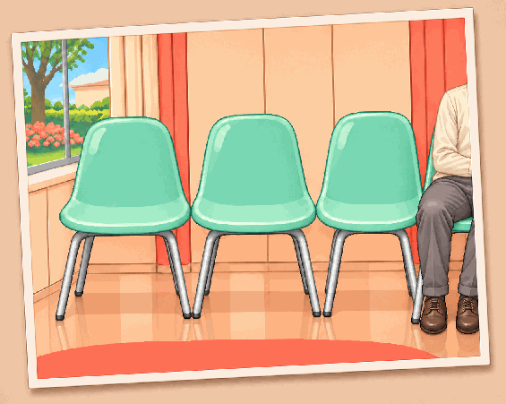
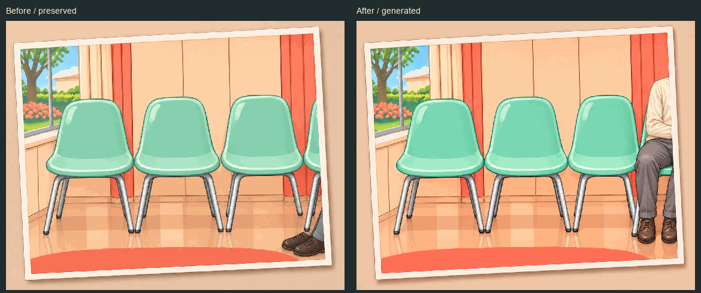
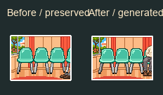
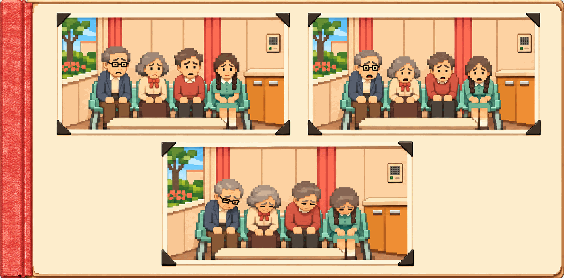
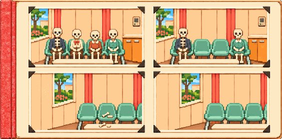
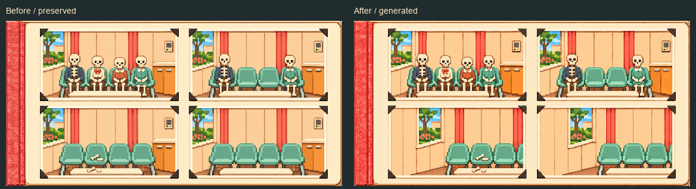
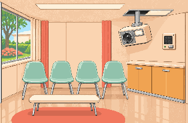

96×96 · RGBA · generated / approval pending

565×451 · RGB · generated / approval pending
All seven current candidates remain generated, pending owner approval. Three new versions: album page3, photo slot and photo inspection. Four other selected images are unchanged.
Private branch agent/ch01-art-batch03-20261115 · previous verified head f42daa9a3b3b9a2631b8b80d88640e944d28848e. Final pushed SHA is reported in the owner handoff.
Owner corrections and separate proposed prose diff · Exact built-in imagegen prompts · Selected assets and hashes · QA · Previous package
Three whole empty chairs, a larger portion of fourth chair, and a properly scaled seated visitor. Lower torso, lap, thighs and knees may appear under the owner’s revised direction. Both shoes face the camera. Head and face stay outside frame.
96×96 · RGBA · generated / approval pending

565×451 · RGB · generated / approval pending


The final two photographs have sideways misalignment at the original wide camera distance and chair scale. They do not adopt the inventory print’s closer view. Historical absence stays separate from the current visitor.

564×278 · RGB · generated / approval pending

564×278 · RGB · generated / approval pending

564×278 · RGB · generated / approval pending

Updated chronological sheet · Updated slot/inspection sheet

314×206 · RGB · generated / approval pending

564×278 · RGB · generated / approval pending


The too-small-leg inspectorv03 and rejected zoomed albumv02 remain in generation-source, alongside all selected source renders. Previous native assets are unchanged in the parent package.
Machine-readable QA · Revision notes · Prior PMO compatibility proposal
No story JSON, gameplay, engine, production art or public Art Lab changes.